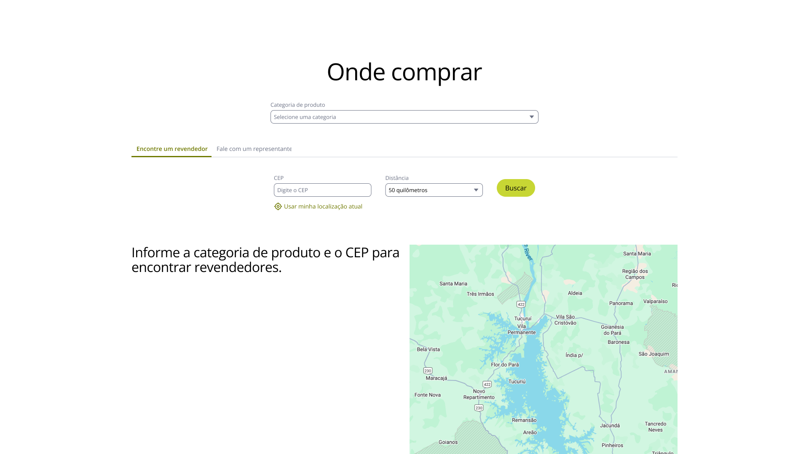

Web Redesign —
Discovery & Design Direction
Mosaic's only point of contact with iCrossing. I ran stakeholder interviews to gather needs and expectations, and contributed to design direction, prototyping and the design system.
Mosaic's web presence had grown into a scattered set of inconsistent sites that hurt the brand. Most traffic arrived cold from Google, visitors rarely got past the homepage, and articles averaged just 8 seconds of read time. Content was buried too deep to find.
With iCrossing, we audited every property and mapped personas and user journeys for each key audience. The audit showed a fragmented experience: SDG, sustainability, annual and investor reports were hard to find, regional pages pulled against the One Mosaic approach, and maintaining all those sites was expensive given the amount of vendor retainers maintained + incredibly difficult to mantain.
One global site for corporate and public affairs, and one for South America marketing. South America is the only region where Mosaic operates as B2C. Everywhere else it's B2B, so one corporate site covers those markets. The old South America site wasn't brand compliant and campaigns ran on separate domains, leaving products hard to find and sales down.

I helped build the design system. Everything is tokenized, so it stays cohesive and scales.
Shared tokens. Both sites use the same tokens and layout with different themes, so the Mosaic experience stays consistent worldwide.
Darker South America theme. The corporate palette is mostly green, so South America uses different colors within the guidelines to stand apart.
Utility pages. They pair with components, not just fixed templates, so the hybrid CMS can spin up things like a product-launch landing page quickly.

10+ properties become two, with one visual system, a tokenized design language and a restructured information architecture. Leadership approved the design. Everything is ready for handoff, and development is paused due to budget.